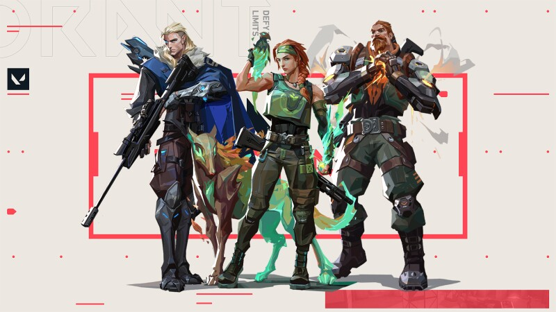

AGENTES
Controladores
 Especialistas em controlar o campo de batalha com o uso de cortinas de fumaça. Suas habilidades atrapalham a linha de visão dos oponentes, ao mesmo tempo que fornecem cobertura para o restante da equipe enquanto assumem o controle de uma área.
Especialistas em controlar o campo de batalha com o uso de cortinas de fumaça. Suas habilidades atrapalham a linha de visão dos oponentes, ao mesmo tempo que fornecem cobertura para o restante da equipe enquanto assumem o controle de uma área.
Esperados na “divisão de territórios perigosos para preparar sua equipe para o sucesso”. Isso geralmente vem na forma de smoke, que pode ser usada para bloquear a visão de um alvo de forma ofensiva ou defensiva, mas também retarda, atordoa e, em alguns casos, usa flashes.Para começar, podemos compartilhar uma categoria que usamos internamente para agrupar alguns dos Controladores. Brimstone, Omen e Astra são chamados de "Fumaceiros" e tendem a aparecer juntos nas discussões.
Duelistas
 Os Duelistas são uma classe VALORANT denominada como “fraggers autossuficientes”, de acordo com as descrições oficiais da Riot. Eles são os agentes que criam mais impacto, oferecendo agressão a uma comp. Deve-se esperar que um Duelista busque combates e frag, seja encontrando o pick de abertura ou segurando uma rodada.Os Duelistas são os agentes mais agressivos do jogo. Suas habilidades dão a eles a autossuficiência necessária para tomar a frente em certas situações. Esses personagens são perfeitos para limpar cantos ou a área onde o time atacará. Portanto, o foco desse tipo de agente é causar dano direto nos adversários e atacar para facilitar o jogo da equipe.
Os Duelistas são uma classe VALORANT denominada como “fraggers autossuficientes”, de acordo com as descrições oficiais da Riot. Eles são os agentes que criam mais impacto, oferecendo agressão a uma comp. Deve-se esperar que um Duelista busque combates e frag, seja encontrando o pick de abertura ou segurando uma rodada.Os Duelistas são os agentes mais agressivos do jogo. Suas habilidades dão a eles a autossuficiência necessária para tomar a frente em certas situações. Esses personagens são perfeitos para limpar cantos ou a área onde o time atacará. Portanto, o foco desse tipo de agente é causar dano direto nos adversários e atacar para facilitar o jogo da equipe.
Deve-se esperar que um Duelista busque combates e frag, seja encontrando o pick de abertura ou segurando uma rodada.Os Duelistas são os agentes mais agressivos do jogo. Suas habilidades dão a eles a autossuficiência necessária para tomar a frente em certas situações. Esses personagens são perfeitos para limpar cantos ou a área onde o time atacará. Portanto, o foco desse tipo de agente é causar dano direto nos adversários e atacar para facilitar o jogo da equipe.
Iniciadores
Os Iniciadores são classes VALORANT que “desafiam os ângulos, preparando sua equipe para entrar em campo disputado e empurrar os defensores para longe”. Esses agentes geralmente se destacam na ofensiva, preparando seus companheiros para o sucesso. Breach e Skye oferecem flashes e atordoamentos de uma forma ou de outra, enquanto Sova fornece visão.
Os Agentes Iniciadores de Valorant são especialistas em desafiar a defesa dos adversários, criando oportunidades para os aliados se posicionarem melhor na área atacada. Por esse motivo, é recomendado que eles tomem as primeiras ações durante as rodadas, utilizando suas habilidades para colocar os inimigos em desvantagem enquanto aguardam o suporte dos aliados, dando seguimento ao combate.
Sentinelas
 Os Sentinelas são classes VALORANT “especialistas defensivos que podem bloquear áreas e vigiar os flancos, tanto no ataque como na defesa”. Em um jogo dedicado a plantar ou neutralizar a Spike, esses agentes são cruciais. Cypher e Killjoy controlam bomsites com seus dispositivos e gadgets, enquanto Sage põe fim aos engages e rotações com lentidões e barricadas.
Os Sentinelas são classes VALORANT “especialistas defensivos que podem bloquear áreas e vigiar os flancos, tanto no ataque como na defesa”. Em um jogo dedicado a plantar ou neutralizar a Spike, esses agentes são cruciais. Cypher e Killjoy controlam bomsites com seus dispositivos e gadgets, enquanto Sage põe fim aos engages e rotações com lentidões e barricadas.
Enquanto os Duelistas são personagens atacantes e ofensivos, os Sentinelas tendem a ser mais passivos e defensivos. Esses agentes geralmente ficam atrás para proteger áreas com armadilhas ou vigiar o flanco, tanto nos rounds de ataque quanto nos de defesa. Dessa forma, a equipe consegue assegurar os objetivos com uma camada extra de proteção.